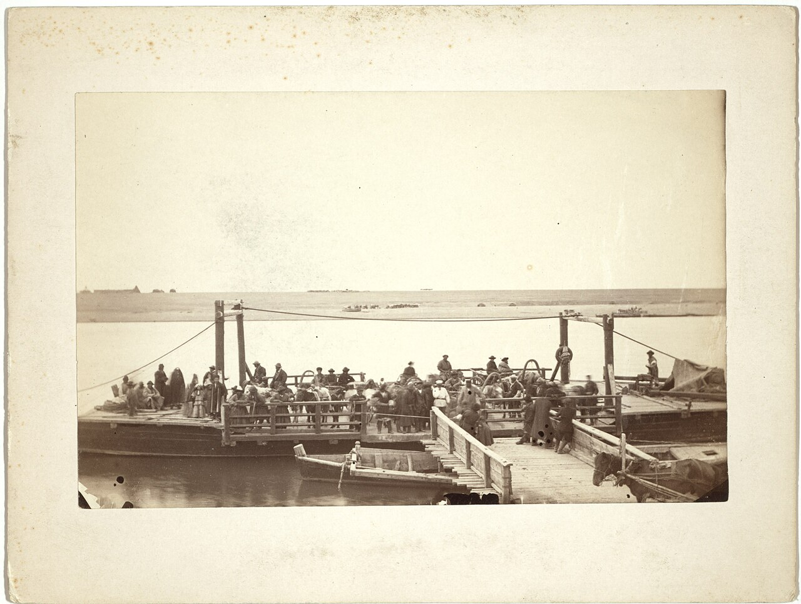

Каталог
Фонд, опись, дело: поиск по шифру, названию, датам и именам, просмотр скана без регистрации.
Фонд, опись, дело: поиск по шифру, названию, датам и именам, просмотр скана без регистрации.
Старые снимки городов с привязкой к описям и документам, которые их объясняют.
Тематические выставки из фондов архива; у каждого показанного документа указан шифр.
Усть-Каменогорск, Зайсан, Риддер, Алтай: адреса, часы приёма, состав фондов и маршрут.
Задайте вопрос по документам. Помощник называет шифры дел, на которых основан ответ.
Режим работы читального зала, контакты, справка по каталогу и порядок ознакомления.
Документы, которые отобрали историки и архивисты. Каждая история ведёт к конкретным делам.

Улицы и дома города на снимках из коллекции Дж. Кеннана и документы, по которым их можно датировать.
Ф. 1-П, оп. 3, д. 12
Как люди и грузы пересекали реку до мостов: паромные книги, жалобы и сметы за 1880–1910 годы.
Ф. 24, оп. 1, д. 63
Что и по каким ценам продавали на ярмарках области, по ведомостям городской управы.
Ф. 7, оп. 2, д. 118Иллюстрации: Wikimedia Commons, общественное достояние. Гравюра «The town of Ust Kámenogórsk» из книги George Kennan, «Siberia and the exile system», 1891; фотографии Семипалатинска и окрестностей, 1885 (Library of Congress, LCCN 99615482, 99615488, 99615489, 99615508); титульный лист «Обзор Семипалатинской области за 1893 год» (CC0). Шифры дел в макете вымышленные.